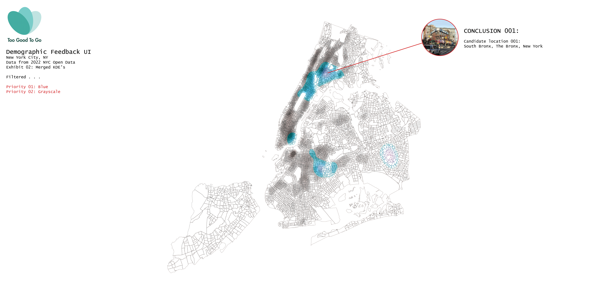
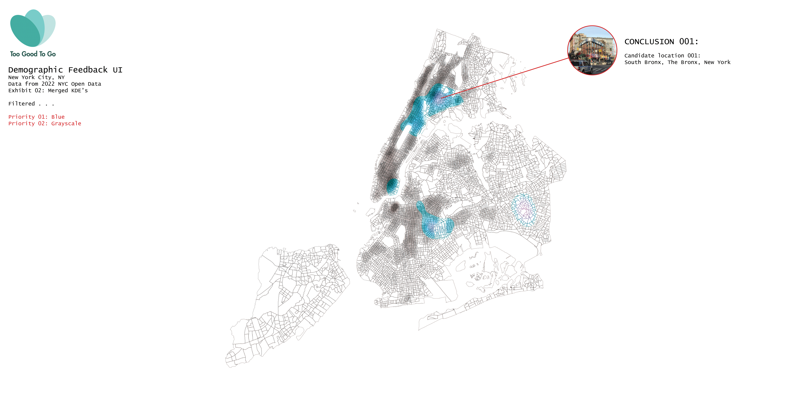

JONATHAN MARCOS
Table of Contents
1 – Systems
ToGoodToGo: Another Life in Food
Taking otherwise disposed food from restaurants to customers at an affordable price.

What is the system?
ToGoodToGo is a company with a purpose to collaborate with various restaurants and supermarkets in order to sell food at a significantly cheaper price than retail that would otherwise go to waste at the end of the day. Primarily, ToGoodToGo runs on a complex system that primarily focuses on the flow of food from elements of the restaurant and/or supermarkets to its customers. Typically, companies delay their availability of food on ToGoodToGo until an hour or two before closing to balance their retail income and waste.As soon as that time period strikes, food and offers are posted on the ToGoodToGo app, showing their stock on how many leftover meals and packages are available before closing. Individuals are then invited to reserve and pick up their meals, pay the reduced price and enjoy! However, the meals are left in mystery, so individuals would not immediately know what they're getting in the bag.
However, this can be consequential in a few ways, especially when individuals with particular allergies end up receiving a random thing that they end up getting an allergic reaction to. However, with ToGoodToGo's reviews dashboard, ToGoodToGo gives customers an opportunity to participate in a feedback loop that allows for opportunities to make better adjustments in the future.
Though ToGoodToGo's intention is to sell affordable food that would otherwise go to waste, ToGoodToGo's app interface is disproportionately inaccessible to the group that would benefit from reduced food fares the most: low-income and the homeless, due to these groups being the most likely to not have a smartphone for use.
ToGoodToGo also competes with higher-end food delivering applications such as UberEats and Grubhub, as ToGoodToGo has it's uncertain mystery with what is received and that customers have to pick up from the vending establishments, whereas UE and GH give the option for customers to get their food delivered to their doorstep.
On the other side of the spectrum, ToGoodToGo competes with government-run food banks, as food banks would give out food to low-income individuals for free instead of at a price. With the government also making food banks more approachable due to their congregations being at public centers instead of restaurants, food banks are better advertised for individuals with smartphones compared to ToGoodToGo.


2 – Authorship
Hierarchy From the Creator to the User
How authorship is distributed in multiple levels in various companies
ToGoodToGo's Authorship
ToGoodToGo is primarily locked into using its mobile application interface in order to manage its orders. This interface's authorship is most likely inspired by other incumbent food-delivery and ordering apps, such as GrubHub, DoorDash and UberEats. However, they expand on the boundaries of their platforms, by catering discounted meals at certain time slots (particularly before closing hours for vendors), but also subtract from these platforms by disabling the privileges of choice in food and delivery.
The lock-in of using the mobile-interface allows for ToGoodToGo to have similar accessibility compared to its mobile food-delivery counterparts, and especially helps it appeal to its primary audience: young professionals and university students, as these groups are frequently on their mobile devices and are also looking for good meals at an affordable price.
Despite such, ToGoodToGo has the opportunity to expand on this by thinking about other groups that would desire affordable meals but with smaller access to mobile devices: homeless and low-income individuals. Instead of only using an app, ToGoodToGo has the potential to use other means of technology that its mobile-food competitors don't take advantage of: Kiosks and stations spread out in front of places such as supermarkets and transportation centers. These kiosks would take the orders in lieu of the apps and would allow those without phones to have the opportunity to take advantage of ToGoodToGo's philosophy.


Though there's not really much content to create from ToGoodToGo, it does get advertised by various influencers, especially on platforms that attract a young audience such as TikTok and Instagram Reels. Of course, ToGoodToGo should get a certain % of revenue from these TikToks, but they also get free advertisement in return.
There are various levels of authorship that happens within the ToGoodToGo interface. The user's authorship primarily focuses on choosing which restaurant they want to order from, placing an order and picking it up if the restaurant is available for purchases. Going lower, the vendors have more control, as they have the ability to determine if their establishments are open to orders, making the orders for the customers, and distributing their goods. Even lower, there's the developers behind TGTG, who are in charge of making sure the app interface runs smoothly and goes through any bugs along the way.

Example Authorship 1: LEGO
LEGO has a particularly interesting Authorship Model, as there are various levels of Authorship that occur within the LEGO experience-- from the pieces themselves to the creators. On the bottom-most level, LEGO has Authorship over the various collections of pieces it creates. From there, LEGO designers use these lego pieces and create manuals on how to design certain sets. Afterward, those who buy the LEGO kits are allowed to build from these given sets, but also are given the opportunity to have a level of authorship as employed LEGO designers have by creating their own original lego designs instead of following step-by-step instructions on given sets.
LEGO's lock-in on creating their foundation on their bricks is very beneficial, as it locks itself as the most popular brick-based toy in the market. However, it has the opportunity to expand by creating official applications to build LEGO sets from, so individuals can make specifications and speculate on how many custom lego parts they need to get in order to create unique LEGO sets.

Example Authorship 2: Minecraft
Minecraft has various levels of authorship within its game. In its bottom-most level, the game is managed and created by developers that create the base libraries and components of the game, such as the materials, worlds, etc. with profits coming from those who purchase Minecraft. From there, creators can create and share Minecraft worlds, potentially making profit based on their builds. Creators can also create multiplayer servers and gain income based on the difference between server traffic and costs.
Creators can even go as far as modding the game in order to do certain things beyond the given libraries initially placed in Minecraft, making profits from the amount of downloads they get. Minecraft's authorship model is structured like a tree: it can branch out in many ways that give others the opportunity to profit, as long as the base payment of $26.95 is given to Minecraft (+ other royalties from bigger multiplayer servers).
Example Authorship 3: Unreal Engine and EPIC GAMES Studios + associated works
Unreal Engine is a free software that allows individuals to create world-building projects and games based on prior modeling. The base level of authorship comes from the developers behind Unreal itself, loading it with the pre-built packages and libraries that users are eventually able to use in order to world-build. From there, users are also able to purchase certain pre-built packs in Unreal in order to have an easier time setting up their scenes.
When these scenes are done, developers and creators can use content from Unreal in order to create games, with notable Unreal-based games being Fortnite, Fall Guys, GTA, etc. These games would make a profit from their users, whether that comes from merchandise, streaming, or advertisement. Of course, some of this profit goes to Unreal. There are many different levels of authorship behind Unreal, but there are different levels that all mutually stack on top of one another in order to create a profit stream.

Collaborative Zine:
This game describes four different systems and their structure of authorship, from the process behind ToGoodToGo, to the practices involved in the informal economies of Lagos, to the Architectural procedures behind Library Renovation, to the system involved in American Money Bails. Each experience all explains how economic and technological barriers prevent these systems from reaching out to potential groups that would otherwise majorly benefit from each respective systems' services.

3 – Politics
Pinpointing the Problem
Using a combination of spatial data and demographics to locate beneficiaries
A principal pain point that sticks out with ToGoodToGo is that the lack of any other interfaces besides a mobile platform makes it difficult for those who cannot afford a phone to access the service, especially low-income and homeless individuals- who would otherwise benefit from ToGoodToGo's products.
In order to figure out this pain point is most apparent, it is essential to look up demographic data, such as census (ACS) results for mean income per household and racial demographics. These datasets have historical politics that go beyond their numbers- past redlining geographically enhanced economic disparities in NYC. However, since these datasets are only so granular, they leave out detailed data, such as which specific blocks are suffering the most economically.


It is also essential to visualize geographically where some potential intervention spots may occur. Taking a look at NYC subway station traffic and NYC Park data and combining them with geographic income data can help visualize where most people circulate throughout the day. Though this is good at pinpointing where major pedestrian traffic would occur, it does not tell a complete story of low-income or where low-income individuals would be most likely to congregate.
These past four data sets would tell a god's eye approach, as these all tell a general story without directly asking individuals for their input. However, getting location data and reviews on ToGoodToGo's vendors would be insightful for where ToGoodToGo currently reaches and also sees where it misses in terms of its extent and flaws, and brings an element of individual perspective.
These five potential data sets work together in order to piece together a story on where ToGoodToGo can make extensions to and where lower-class concentrations are, but there's still a massive gap that still needs to be filled: the perspective and input from lower-income and homeless individuals. These opinions would probably be generated in a feedback loop from a series of surveys and/or interviews.

Method 1: Proximity between subway stations and restaurants
In this method, data points from existing subway station entrances and restaurants (restaurant inspections in place of restaurants, as there needs to be a restaurant in the first place in order for an inspection to even occur) are collected and placed onto a base file of South Bronx. From there, using an O+D grasshopper tool, the points are connected if there is a 15 minute proximity between the station and restaurants. These different points are various subway stations in the Bronx that address the 2,5,6 and D subway Lines.

Method 2: Using a Google API to locate potential congregation points
This GIF shows a collage of collected images that represent potential places where homeless and low-income individuals would potentially be throughout the day. Setting the zoom level to 17, this allows for aerial views that show a resolution at street-size and a little bit of context surrounding these areas. There are four investigation points within this iteration: Areas of circulation (Subway stops), areas of commerce (flea markets, supermarkets, etc.), Low-Income housing (NYCHA apartments, shelters, hostels), and Parks in low-income neighborhoods.
Method 3: Cloropleths of Income to find Areas of Investigation
Cloropleths are useful in geographically visualizing where low-income areas would primarily be throughout New York City. Using ACS 2021 data and census block shapefiles, these are applied in python and manipulated with Folium in order to create an interactive map graphs income throughout NYC, with less-saturated areas having lower income, and vice versa.
4 – Governance
Condensing
Where is it most important to create an intervention?
 

Where are the homeless? Where are the low income individuals throughout NYC?
This simulation of a hypothetical ToGoodToGo UI explores where it would be most probable to find homeless and low income individuals throughout the city. In these two initial datasets, both targets were filtered out by using NYCHA Housing centroids (Low-Income) and 311 complaints (Homeless). From there, the maps condense to the areas where homelessness and low-income housing are most prevalent. The datasets are then merged to pinpoint regions where an intervention would work best.
5 – Behavior
$ Lender Money $
Modeling agents of the system.